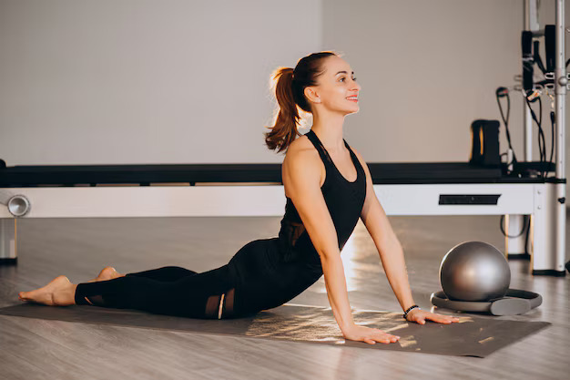
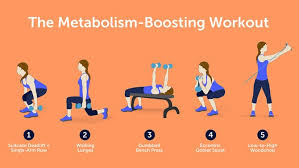
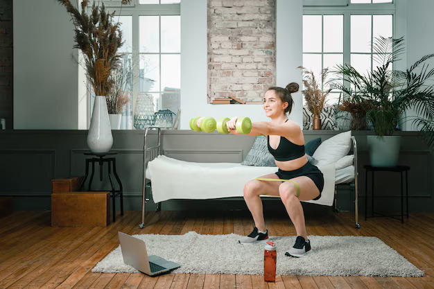
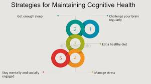

- मासपेशियों की अधिक मात्रा और ताकत बढ़ना

- मांसपेशियों का बेहतर टोन: ताकत बढ़ाने का व्यायाम मांसपेशियों को बनाने और टोन करने में मदद करता है, जिससे शरीर अधिक मजबूत और स्पष्ट दिखाई देता है।
- बेहतर कार्यात्मक ताकत: मासपेशियों की अधिक ताकत से रोज़मर्रा की गतिविधियों, जैसे कि सामान उठाना या बच्चों को संभालना, में बेहतर प्रदर्शन होता है।
- बढ़ा हुआ मेटाबोलिज्म

- आराम के समय बढ़ा हुआ मेटाबोलिज़्म दर:ज्यादा मांसपेशियों से आपका मेटाबोलिज़्म बढ़ता है, जिससे आराम करते समय भी आप अधिक कैलोरी जलाते हैं।
- फायदेमंद वजन नियंत्रण: नियमित ताकत बढ़ाने का व्यायाम स्वस्थ वजन बनाए रखने या वजन घटाने में मदद करता है, क्योंकि यह कैलोरी खर्च को बढ़ाता है।
- हड्डियों के स्वास्थ्य में सुधार
- हड्डियों की घनत्व: वजन उठाने वाले व्यायाम हड्डियों को मजबूत करते हैं और ओस्टियोपोरोसिस को रोकने और फ्रैक्चर का जोखिम कम करने में मदद कर सकते हैं।
- जोड़ों के स्वास्थ्य में सुधार: ताकत बढ़ाने का व्यायाम जोड़ स्थिरता को बढ़ाता है और आर्थराइटिस और जोड़ दर्द का जोखिम कम करता है।
- मानसिक स्वास्थ्य में सुधार

- मूड में सुधार: व्यायाम, जिसमें ताकत बढ़ाने का व्यायाम भी शामिल है, एंडोर्फिन छोड़ता है जो मूड को सुधारता है और चिंता व अवसाद के लक्षणों को कम कर सकता है।
- तनाव में कमी: नियमित ताकत बढ़ाने वाले वर्कआउट्स तनाव प्रबंधित करने में और मानसिक स्वास्थ्य को सुधारने में मदद करते हैं।
- दैनिक कामकाज में बढ़ी हुई फिटनेस
- बेहतर संतुलन और समन्वय: ताकत बढ़ाने का व्यायाम संतुलन, समन्वय, और चपलता में सुधार करता है, जिससे गिरने और चोट लगने का जोखिम कम होता है।
- बेहतर सहनशक्ति:मजबूत मांसपेशियां और बेहतर हृदय स्वास्थ्य संपूर्ण सहनशक्ति और ऊर्जा स्तर को बढ़ाते हैं।
- हार्मोनल लाभ
- हार्मोन का संतुलन: ताकत बढ़ाने का व्यायाम हार्मोन को संतुलित करने में मदद कर सकता है, जैसे कि तनाव और मेटाबोलिज़्म से जुड़े हार्मोन, जिससे कुल मिलाकर हार्मोनल संतुलन में सुधार होता है।
- मासिक धर्म के लक्षणों में कमी: नियमित व्यायाम, जिसमें ताकत बढ़ाने का व्यायाम भी शामिल है, मासिक धर्म और रजोनिवृत्ति से संबंधित कुछ लक्षणों को कम कर सकता है।
- बेहतर मुद्रा
- केंद्र की ताकत: ताकत बढ़ाने का व्यायाम एक मजबूत कोर बनाने में मदद करता है, जो अच्छी मुद्रा बनाए रखने और पीठ के दर्द को रोकने के लिए जरूरी है।
- सही संरेखण और स्थिरता: मांसपेशियों की अधिक ताकत रीढ़ और अन्य जोड़ो की सही संरेखण और स्थिरता को समर्थन देती है।
- आत्मविश्वास और आत्म-सम्मान में वृद्धि
- शारीरिक रूप-रंग: मांसपेशियों के टोन और ताकत में सुधार देखकर आत्म-सम्मान और शरीर के प्रति आत्म-विश्वास बढ़ सकता है।
- सफलता का अहसास: ताकत बढ़ाने के लक्ष्य निर्धारित करने और उन्हें प्राप्त करने से सफलता का अहसास और व्यक्तिगत विकास होता है।
- बेहतर नींद
- नींद की गुणवत्ता: नियमित शारीरिक गतिविधि, जिसमें ताकत बढ़ाने का व्यायाम भी शामिल है, नींद की गुणवत्ता और अवधि को बेहतर बनाने में मदद कर सकती है।
- नियंत्रित नींद के पैटर्न: व्यायाम नींद के पैटर्न को नियंत्रित करने में मदद करता है, जिससे नींद अधिक आरामदायक और पुनःप्राप्ति करने वाली होती है।
- दीर्घकालिक स्वास्थ्य लाभ

- लंबे समय तक रहने वाली बीमारियों से बचाव:ताकत बढ़ाने का व्यायाम डायबिटीज, हृदय रोग, और उच्च रक्तचाप जैसी लंबी समय तक रहने वाली बीमारियों की रोकथाम और प्रबंधन में मदद करता है।
- Aging Gracefully: मांसपेशियों की ताकत और हड्डियों की घनत्व बनाए रखना स्वस्थ उम्र बढ़ने में मदद करता है और बाद की उम्र में जीवन की गुणवत्ता को बेहतर बनाता है।
अपने फिटनेस रूटीन में ताकत बढ़ाने का व्यायाम शामिल करने से शारीरिक और मानसिक स्वास्थ्य के कई फायदे मिल सकते हैं, जिससे यह महिलाओं के संतुलित व्यायाम कार्यक्रम का एक महत्वपूर्ण हिस्सा बन जाता है।